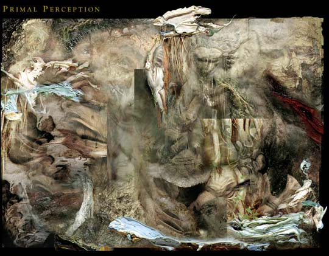
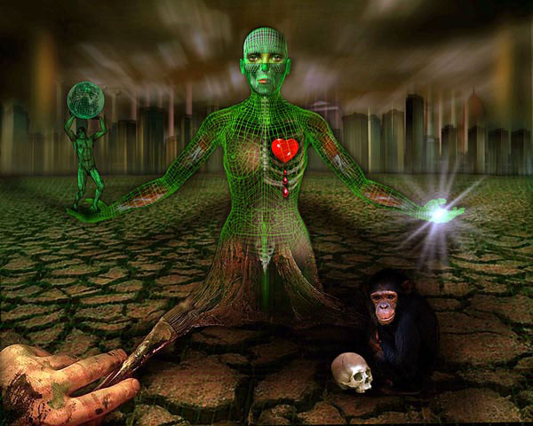
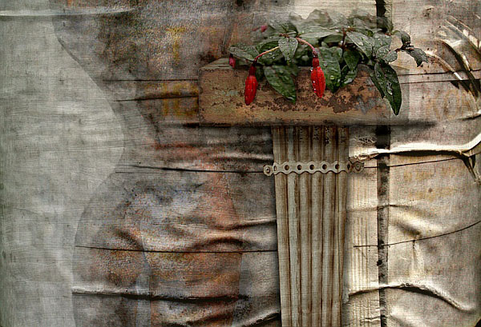
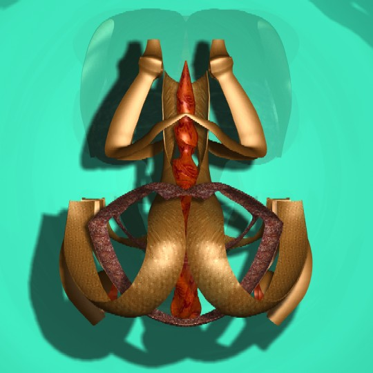
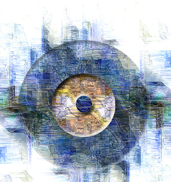
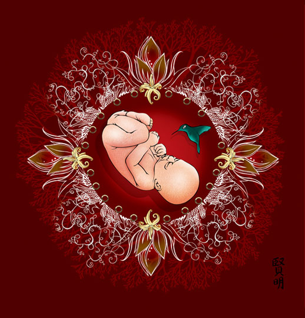
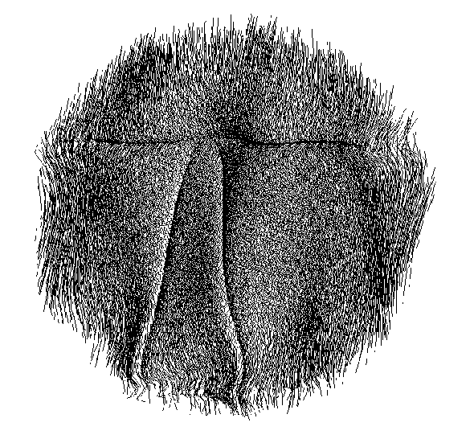

IMAGES OF THE DAY 51
11/11/2022 - 11/20/2022

Primal Perception
by Charles H. Carver
11/11/2022
Click image to access artist's full exhibit
Recurring Dreams
by Glanfyll Lewis
11/12/2022
Click image to access artist's full exhibit

The Bleeding Heart of an Artist 
by Sam Bahreini
11/13/2022
Click image to access artist's full exhibit
Compromised 
The Measure
by JP Paul
11/14/2022
Click image to access artist's full exhibit
The Power
by Tiziana Ciaghi
11/15/2022
Click image to access artist's full exhibit

Firstborn Act I 
by Chiam Ash
11/16/2022
Click image to access artist's full exhibit
Untitled 
by Romesh Mistry
11/17/2022
Click image to access artist's full exhibit
Illustrative 
Birth
by Tom McKeith
11/18/2022
Click image to access artist's full exhibit
Algorithmic 
Stolen Kisses
Evolution 1
by Vlatko Ceric
11/19/2022
Click image to access artist's full exhibit
by Danilo Lejardi
11/20/2022
Click image to access artist's full exhibit

BACK TO IMAGES OF THE DAY 50
NEXT